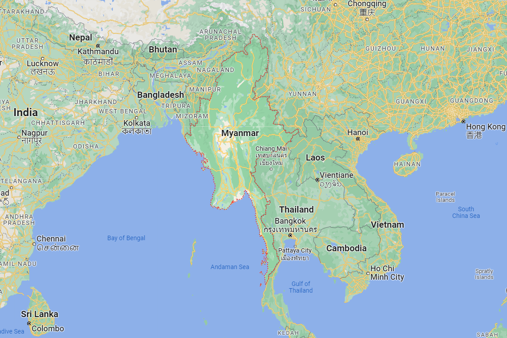

During World War II, the Japanese occupied Burma for a time, but were later thrust from power with the help of British forces through the help of Aung San in exchange for the country’s independence. In 1948, Burma officially became its own sovereign nation. Members of Aung San’s political party are assassinated and an affiliated leader, U Nu, is appointed to lead the country. Various factions continue to vie for control of the country.
The following is a brief timeline of key events since Myanmar’s independence. Those on a Myanmar tour may hear common reference to some of these figures, particularly to Aung San Suu Kyi, daughter of Aung San and current leader of the NLD, the party holding the vast majority of seats in parliament.
1962 – “bloodless” coup by socialist group Union Revolutionary Council. General Ne Win, the leader, instituted changes such as isolating country from rest of the world, establishing a one-party system, and nationalizing commerce across the country.
1974 – A New Constitution is written creating one ‘People’s Assembly” which holds all executive, legislative, and judiciary power. This essentially sets the stage for a military dictatorship.
1989 – The military changes the name of the country Burma to Myanmar and opts to revise the constitution to allow for multiple parties again, though it maintains strict control on media as well as selects which parties may be active in the political process.
1990 – The first multiparty elections are held since the coup to create an assembly commissioned with creating a new constitution. Constant military interference (including placing certain leaders under house arrest) leads to the main party (National League for Democracy, or NLD) walking out on the assembly in 1996 before a constitution can be completed. Many human rights violations are reported during military’s rule, and international pressure for change is heightened through sanctions.
After international pressures heightened for the military leader to release certain people from house arrest, tensions between the government and NLD continue to rise, leading to crackdowns and slews of house arrest for the NLD’s leaders. Aung San Suu Kyi is one of those placed under house arrest for nearly 15 years in varying intervals.
1991 – Aung San Suu Kyi is awarded the Nobel Peace Prize while under house arrest.
The history of Burma covers the period from the time of first-known human settlements 13,000 years ago to the present day. The earliest inhabitants of recorded history were a Tibeto-Burman-speaking people who established the Pyu city-states ranged as far south as Pyay and adopted Theravada Buddhism.
Another group, the Bamar people, entered the upper Irrawaddy valley in the early 9th century. They went on to establish the Pagan Kingdom (1044–1297), the first-ever unification of the Irrawaddy valley and its periphery. The Burmese language and Burma culture slowly came to replace Pyu norms during this period. After the First Mongol invasion of Burma in 1287, several small kingdoms, of which the Kingdom of Ava, the Hanthawaddy Kingdom, the Kingdom of Mrauk U and the Shan States were principal powers, came to dominate the landscape, replete with ever-shifting alliances and constant wars.
In the second half of the 16th century, the Toungoo dynasty (1510–1752) reunified the country, and founded the largest empire in the history of Southeast Asia for a brief period. Later Taungoo kings instituted several key administrative and economic reforms that gave rise to a smaller, more peaceful and prosperous kingdom in the 17th and early 18th centuries. In the second half of the 18th century, the Konbaung dynasty (1752–1885) restored the kingdom, and continued the Taungoo reforms that increased central rule in peripheral regions and produced one of the most literate states in Asia. The dynasty also went to war with all its neighbours. The Anglo-Burmese wars (1824–85) eventually led to British colonial rule.
British rule brought several enduring social, economic, cultural and administrative changes that completely transformed the once-agrarian society. British rule highlighted out-group differences among the country's myriad ethnic groups. Since independence in 1948, the country has been in one of the longest running civil wars involving insurgent groups representing political and ethnic minority groups and successive central governments. The country was under military rule under various guises from 1962-2010 and again from 2021-present, and in the seemingly cyclical process has become one of the least developed nations in the world.
